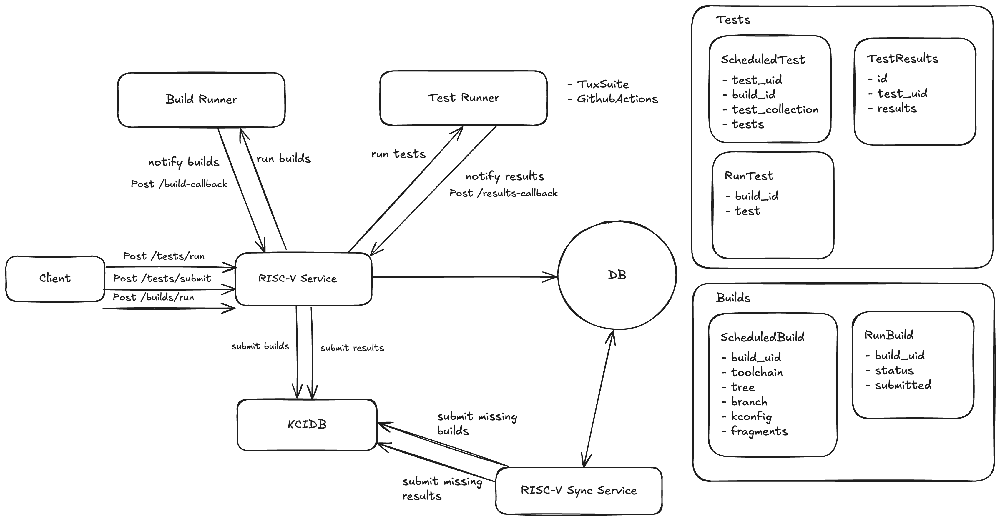

RISC-V KernelCI bridge
FastAPI app that provides REST services which give any maintainer or kernel developer a simple way of submitting tests to KernelCI without adjusting any existing infrastructure to KernelCI's needs.
The project makes use of KCIDB to submit results, meaning you'll need a token to perform submissions. To obtain a token please follow the instructions described in KCIDB github repository.
Project layout
docker-compose-dev.yml # Docker compose file to use in development
docker-compose.yml # Docker compose file to use in production
Makefile # Used to run typically used commands
log.ini # Logging configuration file
caddy/
Caddyfile # Caddy configuration file
backend/
Dockerfile # FastAPI app Dockerfile
app/
app/ # FastAPI app main directory
api/ # Main API directory
v1/
endpoints/ # Contains all endpoint implementations
builds.py # Submit a build endpoint
tests.py # Submit tests endpoint
boot.py # Submit boot tests endpoint
...
api.py # Gathers all endpoints into a single router
core/
config.py # Contains main settings class
db.py # Handles DB specific settings
runners.py # Contains all general runner functions
middleware/ # All middlewares go here
json_middleware.py # Specific for wrongly formed json sent by TuxSuite
models/ # Database models (use SQLModel/SQLAlchemy)
builds.py
tests.py
schemas/ # Pydantic schemas used when parsing requests bodies
builds.py # Models for the submit build service
tests.py # Models for the submit tests service
...
services/ # Contains code that connects to third-party services (runners may be added here)
kcidb_services.py # KCIDB related functions
runner_service.py # General runner functions
...
utils/ # Utilitary functions and classes
exceptions.py
test_parser.py
main.py # Defines the main FastAPI app
pypoetry.toml
poetry.lock
Sytem design
Below there is a diagram portraing the design of the system:

Available services
The app provides services that allow running kernel tests and builds, and submit tests. There is a separate sync service which is meant to be called once a day to retry failed submissions.
Run tests
The endpoint is /api/v1/tests/run. To run tests you need to send a POST HTTP request with a body with this structure:
{
"runner": "string",
"build_id": "string",
"kernel_image_url": "string",
"modules_url": "string",
"tests": [
"string"
],
"collection": "string"
}
The specific details on each of the fields can be found in the TestSuite schema.
Run boot tests
The endpoint is /api/v1/boot-test/run. To run boot tests you need to send a POST HTTP request with a body with this structure:
{
"runner": "string",
"build_id": "string",
"kernel_image_url": "string",
"modules_url": "string"
}
The specific details on each of the fields can be found in the TestSuite schema.
Run builds
The endpoint is /api/v1/builds/run. To run builds you need to send a POST HTTP request with a body with this structure:
{
"runner": "string",
"toolchain": "string",
"tree": "string",
"branch": "string",
"kconfig": "string",
"fragments": [
"string"
]
}
The specific details on each of the fields can be found in the BuildData schema.
Submit tests
Tests can be run in an outside system but still use this app to submit results to KernelCI. To do so you have to send a POST HTTP to /api/v1/tests/submit request with a body with this structure:
{
"test_uid": "string",
"build_id": "string",
"tests": [
{
"test_name": "string",
"test_collection": "string",
"result": "string",
"logs": "string"
}
]
}
The specific details on each of the fields can be found in the RunnerTestsResults schema.
Synchronize submissions
A POST HTTP to /api/v1/sync/results synchronizes non-submitted tests results. While /api/v1/sync/builds synchronizes non-submitted builds.
Both of these services expect and empty body.
This endpoints correspond to the RISC-V Sync Service seen in the system diagram.